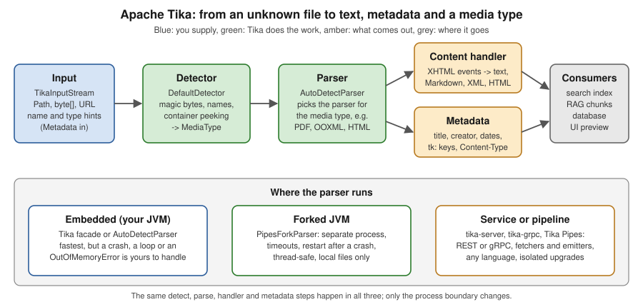

Introduction & Architecture
|
This content was generated with the assistance of AI and should be verified against the official documentation before being relied on in production. |
Baseline date: 2026-10-12. This page was written against Apache Tika 4.1.0 (released 29 September 2026, the latest
release on that date), with the differences of the 3.3.x maintenance line (3.3.2, Java 11) noted where they matter. Tika
4.x needs Java 17 or later; the examples use Java 21 or later, Spring Boot 4.x on Spring Framework 7 and the Docker image
apache/tika:4.1.0. This page is the map of the section: what Tika is, which jars it is made of, how the pieces fit
together and where the process boundary of your application should be. The Bookshelf scenario of the
section landing page is used throughout: an intake service that receives
manuscript.docx, catalogue.pdf, publisher-email.eml and other files it does not control.
The problem Tika solves
A program that accepts files from outside has to answer two questions before it can do anything useful with them: what is this file, and what is in it. The second question is hard because there is no single library that reads everything. Word documents are read with Apache POI, PDF with Apache PDFBox, HTML with a tolerant HTML parser, e-mail with Jakarta Mail, archives with Commons Compress, images with an EXIF and XMP reader, and so on. Each has its own API, its own idea of metadata and its own failure modes.
Apache Tika puts one interface over all of them. Whatever the format, the caller supplies a stream and gets back the
same three things: a media type (the detected type, such as application/pdf), structured text (a stream of XHTML
events that a content handler turns into plain text, Markdown, XHTML or anything else) and metadata (a map of keys
and values such as title, author and creation date). Tika does not replace POI or PDFBox; it chooses the right one,
calls it and translates the result. The official site claims support for over a thousand file types.
The practical consequences are the reason the library is popular for search indexing, content analysis, text mining and RAG ingestion:
-
One code path. The Bookshelf intake service has no
if (pdf) ... else if (docx) ...ladder; a new format is a new parser jar on the classpath, not new code. -
Detection by content. A PDF renamed to
renamed-invoice.pngis still reported asapplication/pdf, because Tika reads the bytes and uses the file name only as a hint. -
Streamed output. Parsers emit SAX events as they read, so a handler can stop early or write to a file without holding the whole text in memory.
A short history
| Period | What happened |
|---|---|
Before 2007 |
The need to parse many formats arose in Apache Nutch and Lucene; a shared toolkit was proposed and entered the Apache Incubator (releases before 0.2 are in the incubator archives). |
Until 2010 |
Tika was a subproject of Apache Lucene (releases before 0.8 are in the Lucene archives) and then became a top-level Apache project. |
2011 |
Tika 1.0 was released. Tika in Action by Chris A. Mattmann and Jukka L. Zitting (Manning, 2011) was written for it. |
2021 |
Tika 2.0 reorganised the modules and raised the baseline to Java 8; 2.x ended with 2.9.4 (May 2025). |
2024 |
Tika 3.0 raised the baseline to Java 11; 3.x continues as a maintenance line (3.3.2 on 16 July 2026). |
2026 |
Tika 4.0 (21 August 2026) is the first stable 4.x release: Java 17, JSON configuration with |
The book still explains the concepts well (media types, the Parser and ContentHandler model, metadata, language
detection), but its code targets 1.0 and does not compile against 4.x. The pages of this section teach the same concepts
with current code.
The four pillars
All of Tika is an elaboration of four ideas.
-
Detection. Given bytes, and optionally a file name or a declared type, decide the media type. Detection combines magic bytes, file name patterns, container inspection (an OOXML file is a ZIP, an old
.docis an OLE2 container) and, for text, character-set detection. See Media Types & Detection and Character Encoding Detection. -
Parsing to structured output. A parser reads one family of formats and emits XHTML SAX events that keep headings, paragraphs, lists, tables and links. A
ContentHandlerdecides what to do with the events. -
Metadata. Every parse fills a
Metadataobject: the title and author found in the file, the detected type, the parsers used, page counts, EXIF fields. The same object also carries hints in (the file name, a declared type). -
Language. Text can be classified by language when the document does not say; the language detectors live in separate modules. Translation is a related, optional feature that needs an external service.
The pipeline
The figure shows the flow for one document and the three places where the parser can run.

The central class is AutoDetectParser: it runs the detector, looks up the parser registered for the detected type and
delegates to it, so that "parse this stream" works for any format. The Tika facade wraps DefaultDetector and
AutoDetectParser behind a handful of convenience methods and is covered in
Getting Started with the Tika Facade.
Two design decisions explain most of Tika’s behaviour:
-
Streamed, push-style output.
Parser.parsereceives aContentHandlerand calls it as it reads. A handler can therefore count, filter, truncate or write to disk without buffering. In Tika 4.x the method takes aTikaInputStream, not a plainInputStream. -
Metadata is bidirectional. The caller puts hints in (
TikaCoreProperties.RESOURCE_NAME_KEY, a declared content type) and the parser adds what it finds.
The module map
Tika is a set of Maven modules, and choosing a dependency is choosing a slice of them. The diagram groups the modules that matter for this section; the table that follows lists them with their artifact names.
Artifact (org.apache.tika) |
What it is for |
|---|---|
|
Detection ( |
|
A |
|
One module per format family, so a service that only reads PDF can depend on one module instead of the whole package. |
|
Parsers that are not part of the standard set because of size or licensing: scientific formats, SQLite, NLP, the inference and VLM modules and some OCR add-ons. The download page also publishes shaded |
|
JSON serialization of |
|
Language detectors; 4.x ships |
|
Translator implementations that call external web services. |
|
Tika Pipes: process-isolated parsing with timeouts and restarts, and pipelines from a source (fetcher) to a destination (emitter). |
|
The command line and GUI, shipped as a zip with a thin launcher jar and a |
|
The REST server ( |
|
The gRPC server and its Docker image |
|
Tools to compare the output of two runs and measure extraction quality. |
|
A bill of materials that keeps all Tika artifacts at one version. |
Source: Using Tika as a Library (Java API), Dependencies and the module list in the Tika source tree.
The 4.x layout was checked on 2026-10-12 against the published POMs on Maven Central; tika-parsers-standard-package
4.1.0, for instance, lists the apple, audio and video, CAD, code, crypto, font, HTML, image, mail, Microsoft,
miscellaneous Office, news, OCR, PDF, package (archive), text, web archive and XML modules.
Embed, run a service or use pipes
The 4.1.x documentation is explicit about the first decision, and this section follows its advice: for most use cases,
run Tika as a separate service instead of embedding it. tika-server (REST) and tika-grpc isolate a parser crash from
your application, can be deployed from the official Docker images, can be called from any language and are upgraded
independently of your own release cycle. Embed the Java API when you need tight integration with Tika internals, cannot
run a network service, or need customisation a service cannot express.
| Option | Isolation | Good for | Cost |
|---|---|---|---|
In-process ( |
None. An out-of-memory error, an infinite loop or a crash is the caller’s problem. |
Trusted input, tests, command-line tools, small batch jobs. |
You own timeouts, memory limits and recovery. Tika documents that calling parsers directly opts out of its sandbox. |
Forked ( |
Separate JVM, restart after a crash, configurable timeouts. Thread-safe: one instance serves many threads. |
Embedding Tika in a Java application that receives untrusted files. |
Startup of the fork; more memory (a second heap). |
Service ( |
Separate process, usually a separate container. |
Polyglot callers, independent upgrades, horizontal scaling. |
A network hop; the server is not a security boundary, so expose it only to trusted callers. |
Pipeline (Tika Pipes) |
Forked JVMs with limits, from a fetcher to an emitter. |
Millions of files, indexing and RAG ingestion at scale. |
Configuration with JSON, plugins for each source and sink. |
Examples
The three examples below are the same intake step written at the three levels of the table above. They were compiled
and run against Tika 4.1.0 with tika-parsers-standard-package and tika-pipes-fork-parser on the classpath, with a
small manuscript.docx whose title is "The Lighthouse Keeper".
One call: the Tika facade
import java.io.IOException;
import java.nio.file.Path;
import org.apache.tika.Tika;
import org.apache.tika.exception.TikaException;
public class FacadeIntake {
public static void main(String[] args) throws IOException, TikaException {
Tika tika = new Tika();
Path manuscript = Path.of("manuscript.docx");
System.out.println(tika.detect(manuscript));
System.out.println(tika.parseToString(manuscript).strip());
}
}Output:
application/vnd.openxmlformats-officedocument.wordprocessingml.document
The Lighthouse Keeper
Chapter one begins at dusk.Full control: AutoDetectParser, a handler and metadata
import java.io.IOException;
import java.nio.file.Path;
import org.apache.tika.exception.TikaException;
import org.apache.tika.io.TikaInputStream;
import org.apache.tika.metadata.Metadata;
import org.apache.tika.metadata.TikaCoreProperties;
import org.apache.tika.parser.AutoDetectParser;
import org.apache.tika.parser.ParseContext;
import org.apache.tika.sax.BodyContentHandler;
import org.xml.sax.SAXException;
public class ParserIntake {
public static void main(String[] args) throws IOException, SAXException, TikaException {
Path manuscript = Path.of("manuscript.docx");
try (TikaInputStream stream = TikaInputStream.get(manuscript)) {
AutoDetectParser parser = new AutoDetectParser();
BodyContentHandler handler = new BodyContentHandler(-1);
Metadata metadata = new Metadata();
parser.parse(stream, handler, metadata, new ParseContext());
System.out.println(metadata.get(TikaCoreProperties.TITLE));
System.out.println(handler.toString().strip());
}
}
}new BodyContentHandler() stops after 100,000 characters and throws a write-limit exception; -1 removes the limit,
which is acceptable here only because the input is a known sample. Always create the TikaInputStream from the
original resource (TikaInputStream.get(path)) and close it with try-with-resources.
Isolated: PipesForkParser
import java.nio.file.Path;
import org.apache.tika.pipes.fork.PipesForkParser;
import org.apache.tika.pipes.fork.PipesForkResult;
public class ForkedIntake {
public static void main(String[] args) throws Exception {
Path manuscript = Path.of("manuscript.docx");
try (PipesForkParser parser = new PipesForkParser()) {
PipesForkResult result = parser.parse(manuscript);
if (result.isSuccess()) {
System.out.println(result.getContent().strip());
} else {
System.err.println("Parse failed: " + result.getStatus());
}
}
}
}The parse happens in a second JVM that the parser starts and restarts for you, so a hostile file can kill the fork but
not the Bookshelf application. PipesForkParser is AutoCloseable and must be closed, which also stops the forked
process. In a test run the forked content began with the document title followed by the body, so the text is not
identical to the body-only text of the previous example; compare outputs before swapping one approach for the other.
The first parse is slower, because it includes the startup of the forked JVM (several seconds in a cold run on a
laptop).
What changed from the book to 4.x
| Topic | Change |
|---|---|
Configuration |
1.x and 2.x and 3.x used |
Parser and detector signatures |
|
Default text format |
4.x command line, server and pipes produce Markdown by default; ask for XHTML explicitly. |
Metadata keys |
Tika-asserted keys are now under |
Crash isolation |
Forked parsing is a first-class feature ( |
Java baseline |
2.x Java 8, 3.x Java 11, 4.x Java 17. |
Source: Migrating to Tika 4.x and FAQ.
What Tika does not do
-
Layout analysis. Tika extracts text in the order a parser provides it; it does not reconstruct reading order across columns, recover table structure from a scanned page or understand figures. Layout-aware document models do that. Combine Tika with such a model where layout matters (see Document Parsing).
-
Writing documents. Tika is a reader. Creating Word, Excel or PDF files is the job of POI and PDF libraries; see Office Files and PDF Generation.
-
Being a security boundary. Calling a parser in your JVM opts out of Tika’s sandbox.
tika-serverandtika-grpcare not security boundaries either; the forked JVM of Tika Pipes is. Never expose a server to untrusted callers. -
Official Spring Boot integration. There is no Spring Boot starter; integration is ordinary Spring wiring.
-
Perfect extraction. A scanned PDF has no text unless OCR is configured, and parsers can fail on damaged files.
Pitfalls
-
Treating the
Tikafacade as safe for hostile input. It runs parsers in your JVM. -
Using
new BodyContentHandler()and not noticing the 100,000 character cut-off, or-1with no limit on untrusted files. -
Adding
tika-parsers-standard-packageas a jar dependency: it is apom, so Maven needs<type>pom</type>. -
Mixing Tika 3.x examples (
TikaConfig,X-TIKA:keys, XML configuration) with 4.x jars. -
Forgetting that parser versions of POI and PDFBox come from Tika’s dependencies and may clash with the versions the application uses elsewhere (see Setup & Installation).